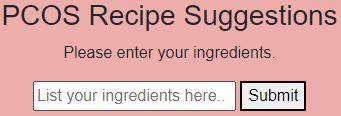
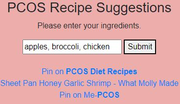

Sign Up or Log in to Find PCOS Friendly Recipes
About PCOS Recipe Suggestor.
The recipe finder is a quick and easy way to identify recipes with ingredients you have available.

The results from this finder are PCOS-specific and provide links that lead directly to the suitable recipes.
This tool also provides links to PCOS-friendly diet suggestions that can open up a variety of recipes for patients that have recently begun their journey with PCOS.
Below is a sample of generated recipe results.
